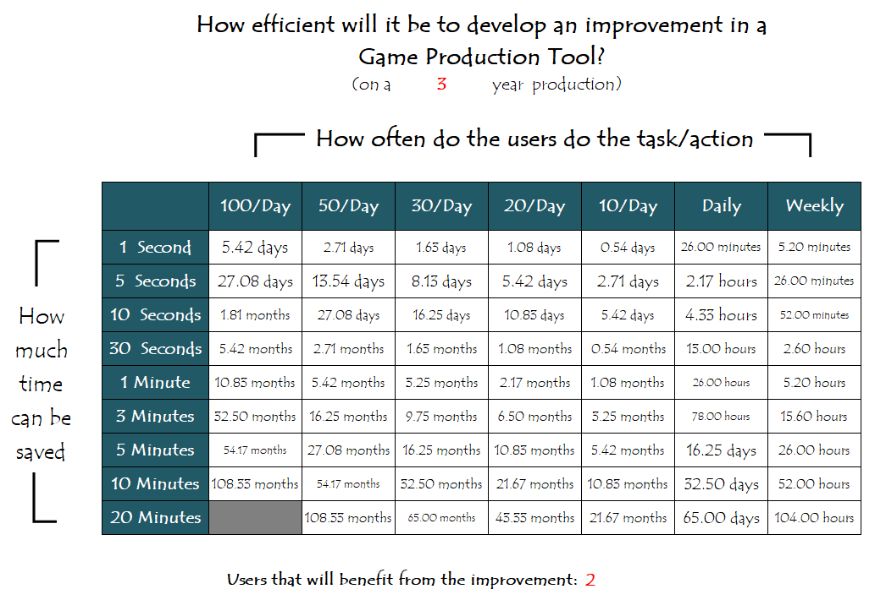
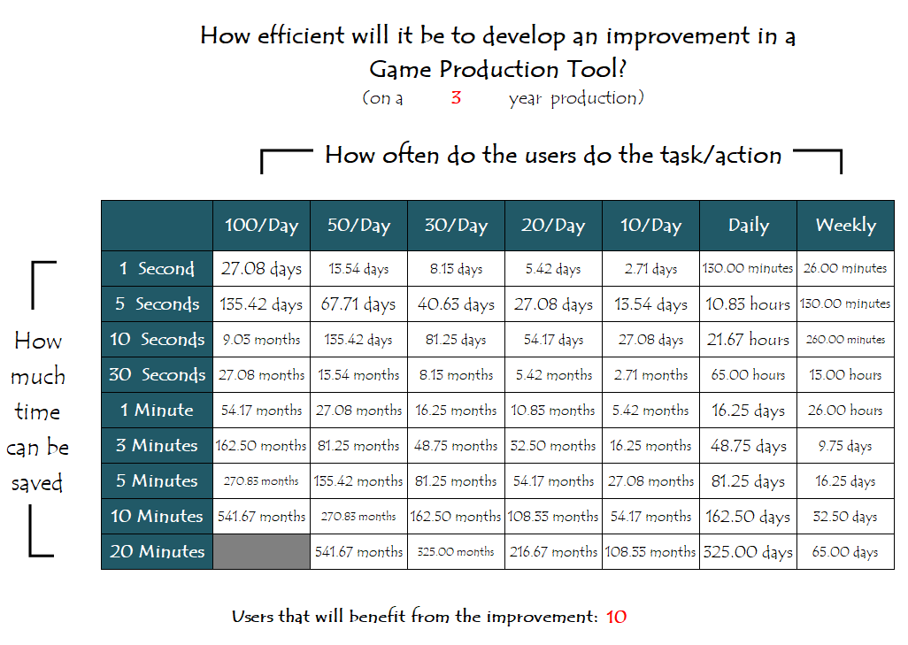
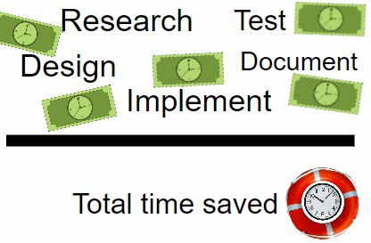
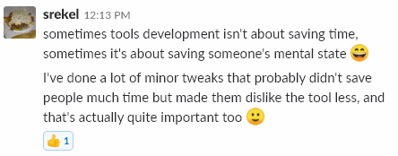
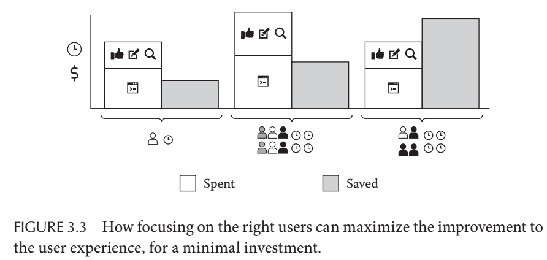
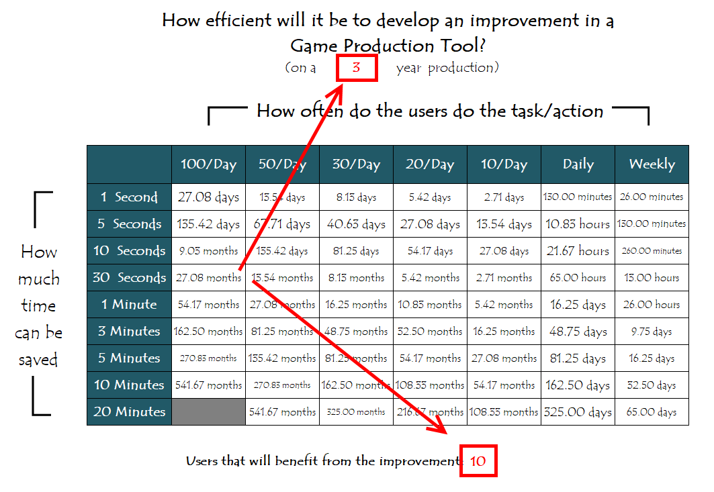
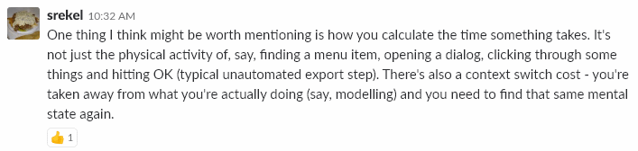
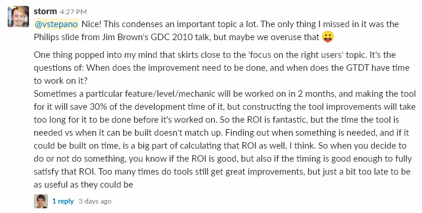

The efficiency ratio for game tools improvements
Last Update on July 22nd, 2018
Game Tools as an investment
Having a Game Tools Development Team (GTDT) is an investment and when you are investing you want to get as much Return On Investment (ROI) as you possibly can. This means the GTDT should be working on the “right” issues of the production pipeline. It is not always clear what the “right” issues are.
The GTDT investment is made by the time resource that the team has. Apart from the time spent on bug fixes the GTDT spends a significant portion of its resource on improving the production pipeline. We need some way to measure the efficiency of the time spent on improving different parts of the pipeline.
“Is it worth the time”
As a young programmer, I used to have a mindset of “I can write a program for this” at almost any problem that I would encounter. Automating things is great but automating every single task I would encounter would be a waste of time, especially if the task that I wanted to automate would need to be done only once a year or so. A number of years ago I found an excellent resource that could answer the question should I automate this. This resource was an xkcd “Is it worth the time” comic [1]. I usually reference it to stop myself from automating everything with Python.

Mapping the table to Game Tools Development
When you are in a GTDT most of your work is aimed at improving the workflows of others on the production team. Projecting the table onto the work of a GTDT and you get a table that can be used to calculate the efficiency ratio of the Tool Developers.
The original table is used for saving the time of the single person that is using the table. When working on an improvement for a tool, the Tool Developer is improving the workflow of multiple people. Meaning that the time saved is multiplied by the number of users that will benefit from the improvement to the tool.
Here are some examples of how the efficiency table can look like:
- a 3-year game production;
- 5-day work week; 8-hour work day;
- 260 work days in a year;
- 52 work weeks;
How long can you work on an improvement of a tool that will benefit 2 users:

How long can you work on an improvement of a tool that will benefit 10 users:

How to use the efficiency table
The ratio of the time that it will take to implement the improvement, to the time savings can be used to determine how efficient the usage of the GTDT resources will be. The calculated ratio can determine how efficient it would be to implement this improvement to the tool. The smaller the ratio the better.
Depending on the process used for developing improvements in the tools the ratio can look like this: 
If an improvement will take longer to implement than the total time saved - it doesn’t mean that the improvement isn’t worth implementing. It just means that there might be another improvement that will be more efficient to implement in the current circumstance. This might be due to the fact that there are not enough users that can benefit from the improvement.
Another thing to consider is the sanity of the user of the tool. Anders Elfgren brought up this point in one of the many interesting conversations in the Toolsmiths Slack.  Even if it isn’t efficient to implement the improvement, helping save the user’s mental state is something to keep in mind when deciding what to do.
Game Tools UX angle
It may seem that saving a second or two is not that much. However, when an operation is performed by many users a hundred times per day the savings can be significant over the lifetime of the production or tool. Robin-Yann Storm touches on this point at his GDC UX micro talk[3], where he explores the UX features of an editor Gizmo. The Gizmo is one of the most day-to-day used features of any Level Editor.
Every second counts when it comes to optimizing commonly used tool functionality. If you don’t believe me, you can use the Human Factors “Increased productivity ROI calculator”[2, 4] where you can see how even the smallest savings in time can save a lot of money for the production.
If you are interested in topics like these, I would recommend reading David Lightbown’s book[2]. David covers a range of topics about how to improve game development tools from the UX point of view. Here is an example of how focusing on the right users can maximize the improvement while keeping the investment to a minimum.
 A figure about maximizing the improvement while keeping the investment to a minimum from the “Designing the User Experience of Game Development Tools” book [2.1]. Used with permission from David Lightbown.
Final thoughts
Of course, the tool and the improvement in the tool will live longer than the project production time. However, this ratio is more of measuring how efficient are the GTDT resources spent during the production life cycle of a game.
It is important to note that this table can only be used for a part of the GTDT responsibilities. There are other essential maintenance and validation tasks that can’t be simply measured in terms of how efficient the tools team is used. We will need to think of some other way to measure those Tool Team activities. I’ll write down some thoughts on maintenance and validation improvements in a future post.
Make your own table
If you want to make your own table for estimating the profits that you can reap from optimizing the development process you can go ahead and punch in your own numbers:
The primary variables in the spreadsheet are:
- the number of years the project will be worked on
- the number of users that will reap the benefits from the improvements to the tool

Update 07/22/2018
Some insightful comments from the Toolsmiths:
-
Anders Elfgren writes: 
-
Robin-Yann Storm writes: 
References
- Is It Worth the Time?, xkcd, Randall Munroe
- Designing the User Experience of Game Development Tools, David Lightbown 2.1 Designing the User Experience of Game Development Tools, (pp. 30-32), David Lightbown
- Tools Tutorial Day: UX Microtalks, Part 1, GDC 2018, David Lightbown, Nikoline Høgh, Robin-Yann Storm
- Increased productivity ROI calculator, Human Factors International